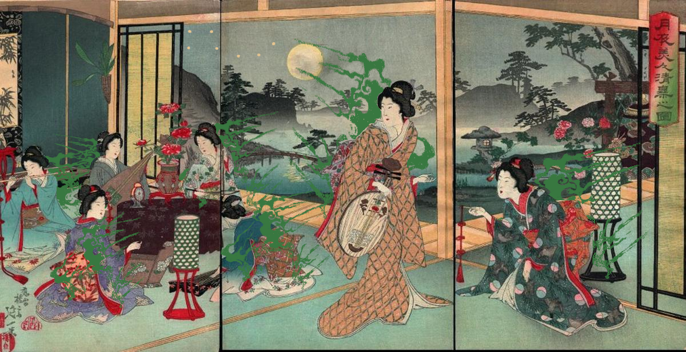
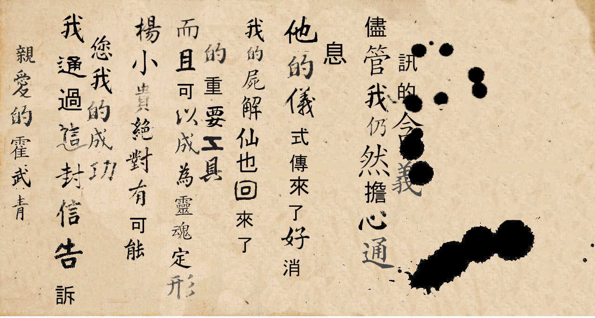
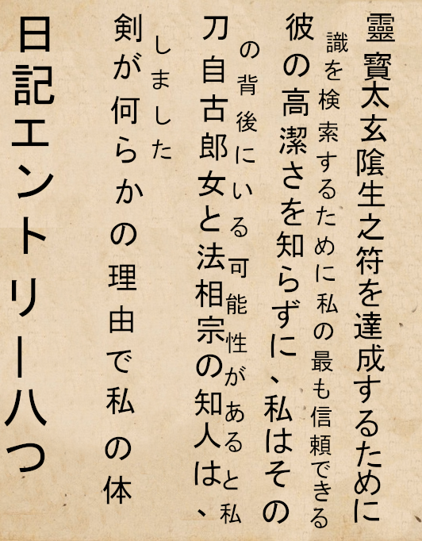
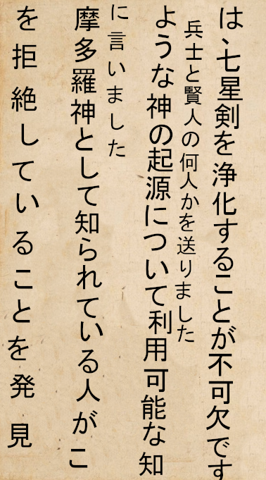
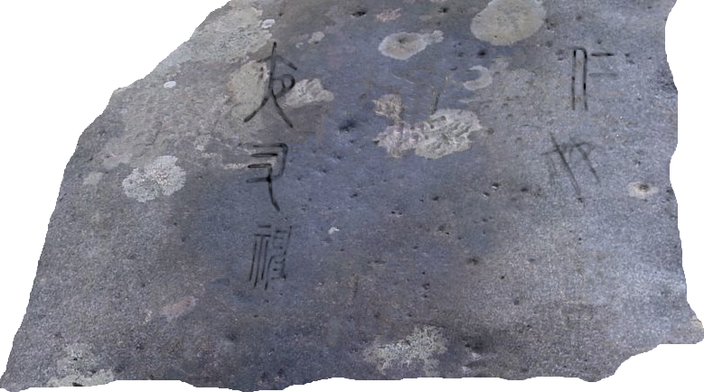
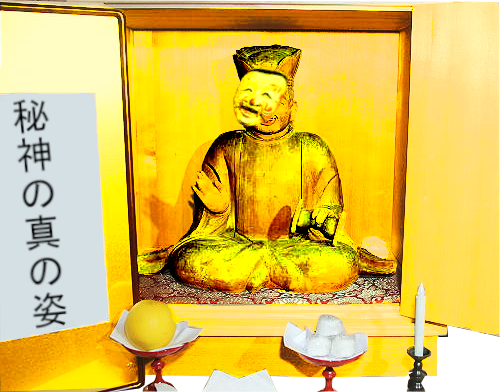

Realizar um festival durante a guerra civil que assola o Japão não é uma boa ideia, o imperador Japonês determinou então que os templos de Ise e Suwa destacassem sacerdotes e mikos para proteger o Imperador caso algo ocorra durante os desfiles oficiais entretanto, parece que isso não deu muito certo
Pintura encontrada no templo Budista de Naniwa
Quando vocês se encontraram para explorar o templo budista na cidade de Naniwa, descobriram essa pintura junto com diversos outros itens religiosos, vocês conseguem perceber as chamas verdes nas costas das mulheres e também a constelação de sete estrelas aparecendo no céu
Pergaminho conseguido na bolsa de um guerreiro Europeu

Ao chegarem no Mausoléu de Umebachi Goryo na vila destruida de Taishi, vocês foram atacados por um guerreiro estrangeiro vestido com trapos Europeus, vocês o mataram e em sua bolsa, encontraram o pergaminho para resolver o primeiro puzzle do Mausoléu.
A principal interpretação que precisa ser feita para resolver este puzzle é que a Lua e o Sol neste pergaminho são metáforas para o Samsara e o Nirvana e que a Morada do Dharmadhatu é o caminho correto para caminhar
Carta em chinês encontrada no Mausoléu Umebachi Goryo
Enquanto andavam pelo Mausoléu, vocês encontraram uma sala contendo um armário cheio de pergaminhos e papéis espalhados pelo chão e sobre a mesa, o documento parece estar em chinês e parcialmente borrado
Documento encontrado no Mausoléu Umebachi Goryo
 Na mesma sala, vocês também encontraram estes documentos em Japonês moderno
Inscrição encontrada na parede no templo do Deus Secreto
Quando vocês perderam a espada de sete estrelas e caíram na parte mais profunda do mausoléu, vocês se viram em um altar selado dedicado ao Deus Secreto e em uma das paredes, vocês encontraram essas escritas que se parecem com Kanjis
Estátua dourada encontra no templo do Deus Secreto
No altar fechado, vocês encontraram essa estátua dourada contida em uma caixa, a estátua parece segurar um tambor e vestir uma máscara de Noh do tipo Okinamen, vocês encontram algumas escritas na porta do altar e alguns alimentos podres colocados como oferenda
1 - As lamentações que somente Jizō ouve
Poema escrito por Katsumi Ise no inferno

Quando chegaram no inferno, vocês encontraram Katsumi Ise, a miko do templo de Ise que tinha sido enviada para escoltar o imperador do Japão, quando vocês se aproximaram dela, viram que ela estava escrevendo um poema em um papel
Escritas na parede na torre de Higan

Quando vocês chegaram na torre de Higan, onde o sino de Avicci ficava localizado, vocês foram barrados por uma porta, nas paredes, vocês encontraram inscrições que indicavam para vocês realizarem uma performance de Noh para abrir a porta
Mandala encontrada no sino de Avicci

Quando vocês encontraram o Sino de Avicci, viram que ele era decorado com uma mandala que vocês poderiam ler. Esta mandala serviria como um prenuncio de que o reino animal estaria contido dentro do corpo da Ushi-Oni a aranha do Inferno. Vocês também descobriram que o sino de avicci declara que quem o tocar terá felicidade e prosperidade durante a vida, mas será arremessado nas camadas mais profundas do inferno ao morrer
2 - Idolo do Diabo
Papel encontrado na casa de Lafcadio Hearn

Enquanto estavam em Hourai, vocês encontraram uma vila habitada por fadas, essa vila ficava de frente para uma cachoeira e alguns metro dela ficava também um casa. Vocês descobriram que esta casa pertencia a um homem estranhos que visitou a ilha um tempo atrás, ele teria simplesmente desaparecido deixando apenas algumas evidências de quem era. Vocês descobriram que se tratava de Lafcadio Hearn, um escritor que teria feito um livro detalhando como é a ilha de Hourai.
Kwaidan: Histórias e Estudos de Fantasmas
Baixem o pdf aquiNa casa de Lafcadio, vocês encontraram 4 livros, o primeiro era o Kwaidan: Histórias e Estudos de Fantasmas, um livro escrito por Lafcadio, Tabaco e o diabo de Ryunosuke Akutagawa e o Pavilhão Dourado de Yukio Mishima. Vocês abrem o Kwaidan para ver que ele ainda está incompleto mas que contém diversas passagens que falam sobre Hourai
Poster encontrado nas ruas de Tiryagyoni

Enquanto andavam pela cidade moderna de Tiryagyoni, vocês encontraram este poster na parede, ele parecia conter algum tipo de recrutamento ou chamado para a construção do que vocês agora sabem ser o maior ídolo do reino Animal, o Mecha Yama